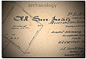
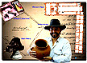
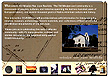
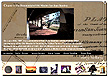
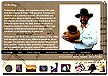
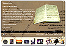

|  |  |
The Director of the CSU Monterey Bay Institute of Archaeology was recently
the recipient of a $5,000 grant for his proposed project: "Archaeology,
Multimedia, and Online Resources for Old Mission San Juan Bautista" (Mendoza,
2000). The grant was used for the purposes of hiring student technicians
who assisted in the in-house summer production of a CD-ROM courseware package
documenting the archaeology, art, and history of the Old Mission and community
of San Juan Bautista.
|  |  |
The multimedia portion of the project encompassed archaeology, art,
and history, and continues to center on the digitization of photographs,
video, audio, and text for use in the development of a new interactive
learning CD-ROM -- and virtual museum tour -- for the Old Mission and community
of San Juan Bautista. The resulting CD-ROM, which was completed in under
two months, consists of over 50 screens of text, photographs, audio, video,
and mission music. For a preview of the prototype, click on any of
the thumbnails on this page.
|  |  |
Please note that the CD-ROM will be available for purchase, and proceeds
from the purchase will benefit both the Old Mission and community of San
Juan Bautista, as well as the Museum Education Project of the CSU Monterey
Bay Institute of Archaeology. Please visit this portion of the site
for further updates on our progress.